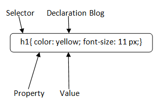

CSS
What is CSS?
• CSS stands for Cascading Style Sheets
• CSS describes how HTML elements are to be displayed on screen, paper, or in other
media
• CSS saves a lot of work. It can control the layout of multiple web pages all at
once
• External stylesheets are stored in CSS files

CSS History
• 1994: First Proposed by Hakon Wium Lie on 10th October
• 1996: CSS was published on 17th November with influencer Bert Bos
Later he became co-author of CSS
• 1996: CSS became official with CSS was published in December
• 1997: Created CSS level 2 on 4th November
• 1998: Published on 12th May

CSS How-To
There are 3 ways to write CSS in our HTML file.
• Inline CSS
•Internal CSS
• External CSS
Priority order
Inline > Internal > External
Why To Use CSS?
CSS is used to define styles for your web pages, including the design, layout and variations in display for
different devices and screen sizes.
CSS Example
body {
background-color: lightblue;
}
h1 {
color: white;
text-align: center;
}
p {
font-family: verdana;
font-size: 20px;
}
• CSS saves time: You can write CSS once and reuse the same sheet in multiple HTML
pages.
• Easy Maintenance: To make a global change simply change the style, and all elements in
all the webpages will
be updated automatically.
• Search Engines: CSS is considered a clean coding technique, which means search engines
won’t have to
struggle to “read” its content.
• Superior styles to HTML: CSS has a much wider array of attributes than HTML, so you can
give a far better
look to your HTML page in comparison to HTML attributes.
• Offline Browsing: CSS can store web applications locally with the help of an offline
cache. Using this we
can view offline websites.
CSS Syntax:
CSS comprises style rules that are interpreted by the browser and then applied to the corresponding elements
in your document.
A style rule set consists of a selector and declaration block.
• Selector -- h1
• Declaration -- {color:yellow;font size:11px;}
The selector points to the HTML element you want to style.
The declaration block contains one or more declarations separated by semicolons.
Each declaration includes a CSS property name and a value, separated by a colon.

• For Example:
color is property and blue is value.
font-size is property and 12px is value.
CSS declaration always ends with a semicolon, and declaration blocks are surrounded by curly braces.
• Example : In the following example all p elements will be center-aligned, with a blue
text color:
p {
color: blue;
text-align: center;
}
CSS Comment
Comments don’t render on the browser
Helps to understand our code better and makes it readable.
Helps to debug our code
Two ways to comment:
• Single line
/ This represents the most/ least important line of the doc. /
• Here is how to comment out Multiple lines:
/*
h1
{
color: red;
text-align: center;
}
*/
CSS Editors
Some of the popular editors that are best suited to wire CSS code are as following:
• Atom
•Visual Studio Code
• Brackets
•Espresso(For Mac OS User)
•Notepad++(Great for HTML & CSS)
•Komodo Edit (Simple)
•Sublime Text (Best Editor)